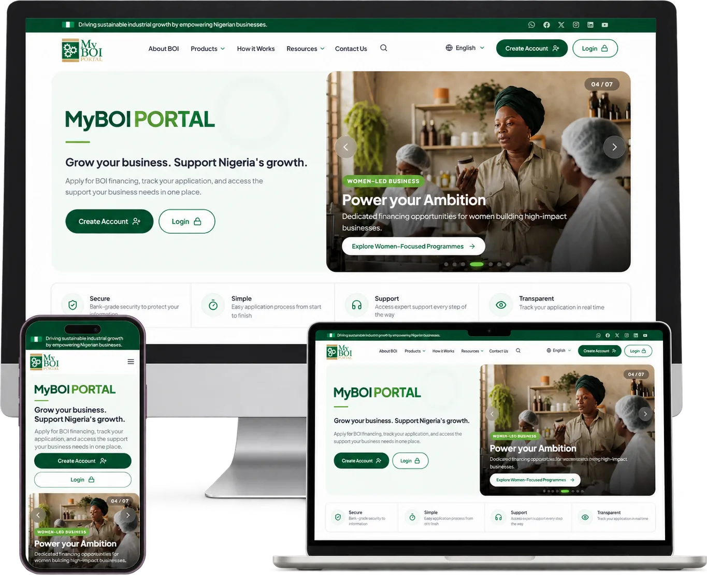

Chief Host
Dr. Olasupo Olusi
Managing Director/CEO
Bank of Industry
BOI Sustainability Conference 2026
Green, resilient and profitable: two keynotes, three launches and six working sessions on climate risk, decarbonisation and the business case for sustainability.
01/05
Save the date
17 November 2026
The time
From 10:00 AM
West Africa Time
The place
Lagos, Nigeria
Venue to be announced
The countdown is on
The 2026 programme
Plenary
Block 1 · concurrent sessions
11.45am – 12.30pm
Block 2 · concurrent sessions
12.45pm – 1.30pm
About the platform
The conference is the foremost gathering of small and medium-sized enterprises for knowledge sharing on sustainability in Nigeria. It convenes leading experts, practitioners and ecosystem enablers to share practical pathways to greener, more resilient and more profitable SMEs.
Conversations on stage reflect the wider sustainability agenda — the key challenges and opportunities on the road to energy transition, net-zero and more sustainable business operating models.
Scenes from 2025
2026 line-up
Areas of focus
Cutting emissions, energy and waste across operations and value chains.
DecarbonisationEnergy TransitionRenewable & Distributed EnergyEnergy EfficiencyNet-Zero PathwaysCircular EconomyWaste & RecyclingWater StewardshipSustainable AgricultureGreen Buildings
Preparing businesses, workforces and communities for a changing climate.
Climate Risk & AdaptationResilient Value ChainsHealth & SafetyEmployee WellbeingSkills & Green JobsWomen in BusinessYouth-Led EnterpriseCommunity DevelopmentHuman Rights & Labour Standards
Making sustainability pay — through capital, disclosure and sound governance.
Green & Transition FinanceAccess to CapitalAsset LeasingCarbon MarketsSustainability ReportingTransparency & DisclosureRisk ManagementBoard OversightBusiness EthicsStakeholder Engagement
In their words
The ESG Conference is our platform to champion responsible business practices, co-create solutions, and accelerate Nigeria's transition to a sustainable future.
Go paperless
While you’re here for the conference, meet the self-service platform Bank of Industry customers use to manage financing end-to-end, without a branch visit.

Newsroom
The second edition of the Bank of Industry Sustainability Conference is proposed for 17 November 2026 in Lagos. The venue will be announced on this site.
Read the full storyThe Bank of Industry invites business leaders, policymakers, investors and sustainability practitioners to its flagship ESG Conference at the Federal Palace Hotel, Lagos.
Read moreThe archive
#BOISUSTAINABILITYCONFERENCE
Join the business leaders, policymakers and investors building a more responsible Nigerian commercial sector.
17 November 2026 · doors open in ––d––h––m––s